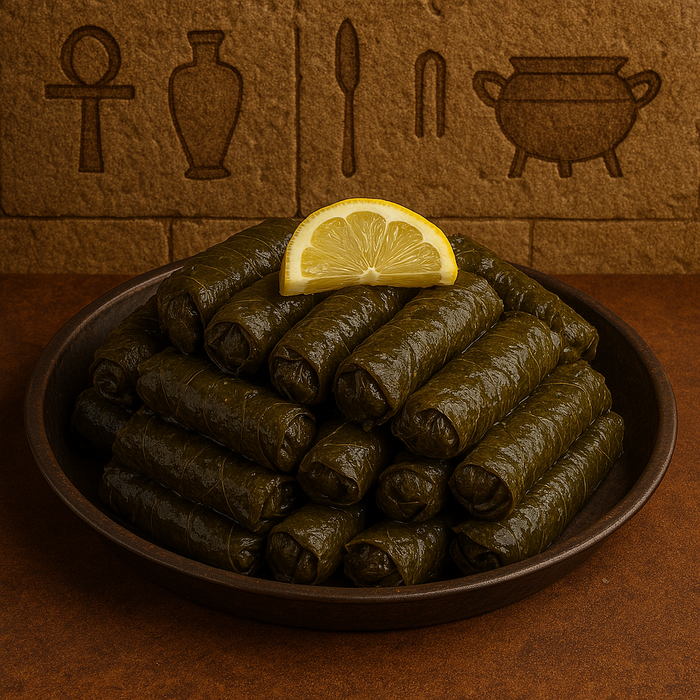

Delicate Rolls of Flavor
Stuffed grape leaves, known as “warak enab,” are tender vine leaves wrapped around a fragrant rice and herb filling, slowly cooked with lemony broth. A true Mediterranean delight.
Ingredients:
- 1 jar grape leaves (about 60 leaves)
- 1 cup short-grain rice
- 1 tomato (finely chopped)
- 1 onion (grated)
- 1/4 cup parsley (chopped)
- 1/4 cup dill (chopped)
- 2 tablespoons tomato paste
- Juice of 2 lemons
- Salt, pepper, cumin
- Olive oil and water
Instructions:
- Mix rice, tomato, onion, herbs, tomato paste, lemon juice, oil, and spices.
- Place a small amount of filling in each grape leaf and roll tightly.
- Layer in a pot and cover with a plate to keep them in place.
- Add lemony water to cover. Simmer gently for 45–60 minutes until tender.
- Let cool slightly before serving. Enjoy warm or cold!